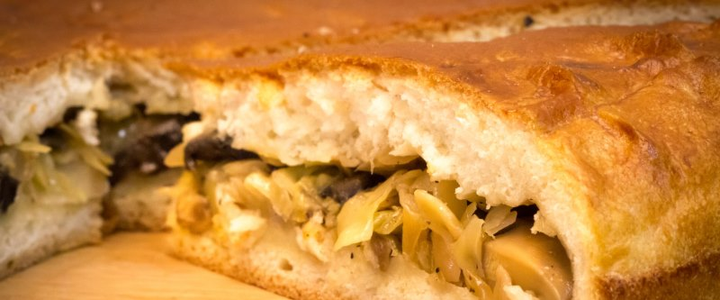

приготовление:
-
Тесто. Развести 50 г свежих дрожжей в 1½ стакана тёплой воды. Растереть 2 яйца с 1 стаканом сахара, добавить 120 г растопленного и остывшего сливочного масла и дрожжевую смесь. Вмешать 200 г сметаны и ½ ч. л. соли. Постепенно всыпать до 1,5 кг муки и замесить мягкое, нетугое тесто. Накрыть его, пока остывают начинки.
-
Начинка: тушёная капуста. Мелко нарезать 1 луковицу и тонко нашинковать 800 г белокочанной капусты. Обжарить лук на небольшом количестве масла до мягкости, добавить капусту и тушить под крышкой на среднем огне 20–30 минут, периодически помешивая. Если капуста начинает пригорать, влить немного воды. Посолить и поперчить, затем снять крышку и дать лишней жидкости выпариться. Остудить начинку.
-
Начинка: мясная. Залить 700 г говядины без кости водой, довести до кипения и варить на слабом огне ≈ 1½–2 часа, пока мясо не станет мягким. Достать мясо из бульона, дать немного остыть и прокрутить через мясорубку. Мелко нарезать 1 луковицу и обжарить до золотистости. Сварить вкрутую 2 яйца, очистить и мелко порубить. Смешать мясо, лук и яйца, посолить и поперчить. Если начинка суховата, добавить немного бульона, в котором варилось мясо. Остудить.
-
Сборка. Разделить тесто на две части. Одну раскатать и уложить в смазанную форму, оставив бортики. На одну половину основы выложить тушёную капусту, на другую — мясную начинку. Раскатать вторую часть теста, накрыть весь пирог одним пластом и защипнуть края. Если хочется сделать весь пирог с одной начинкой, удвоить её количество.
-
Оставить собранный пирог подходить в тёплом месте на 1½ часа. Смазать верх 1 взбитым яйцом и выпекать при 180 °C ≈ 40–50 минут, пока верх не подрумянится, а тесто по краям не пропечётся.